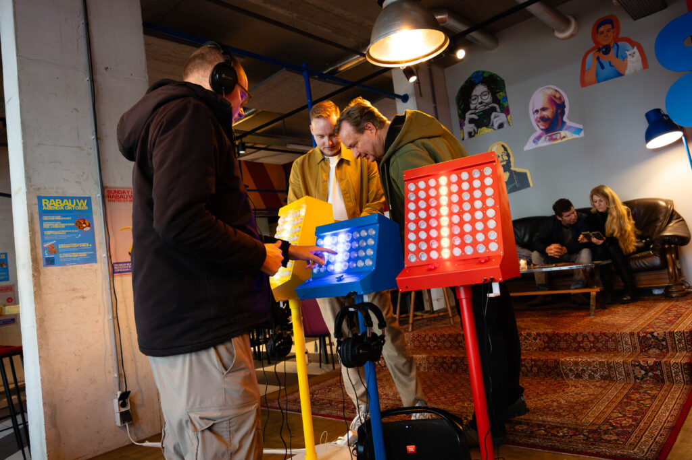
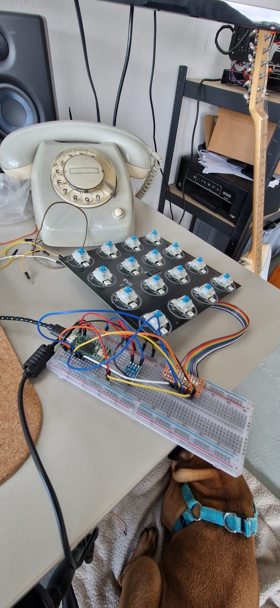
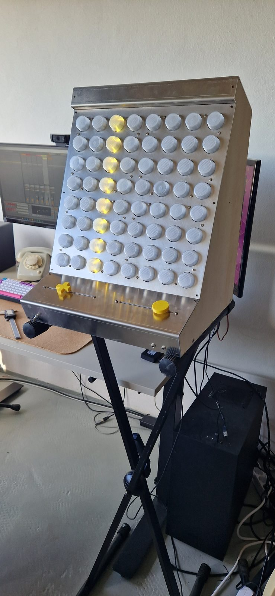
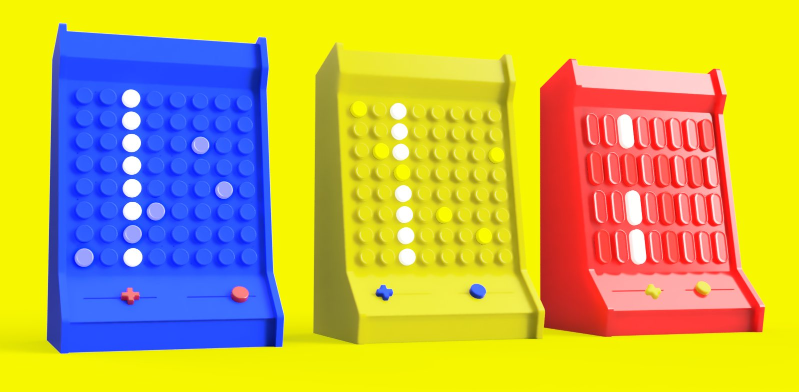
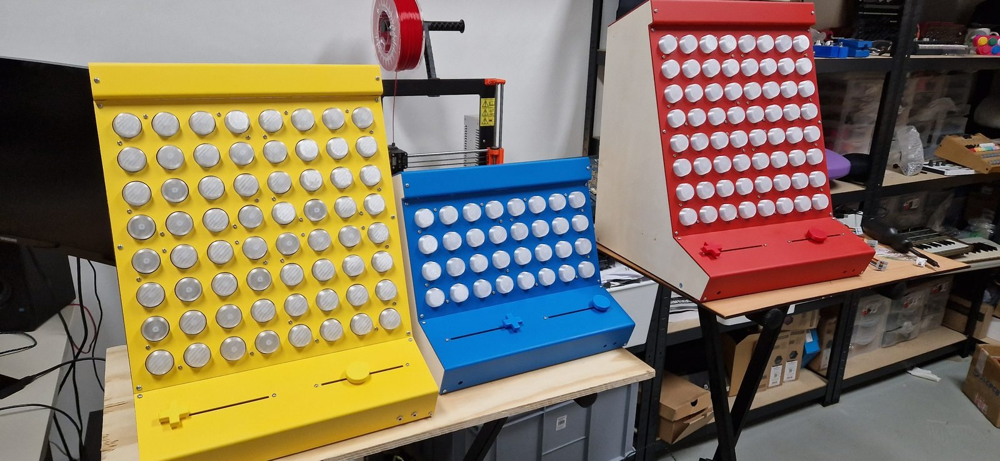
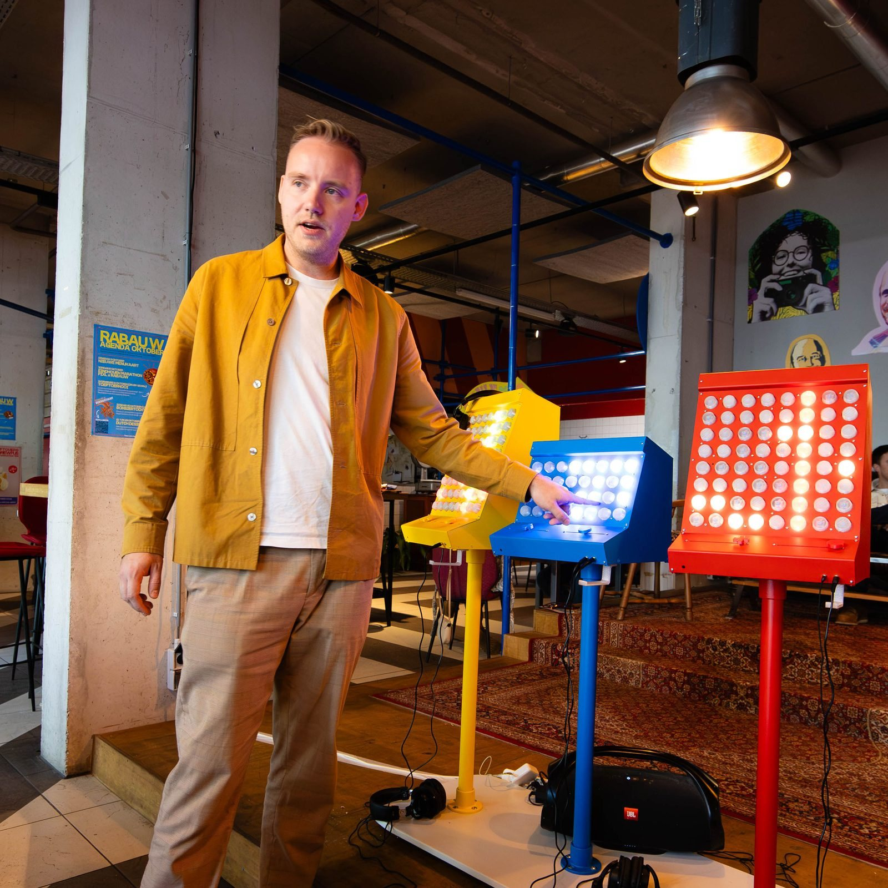
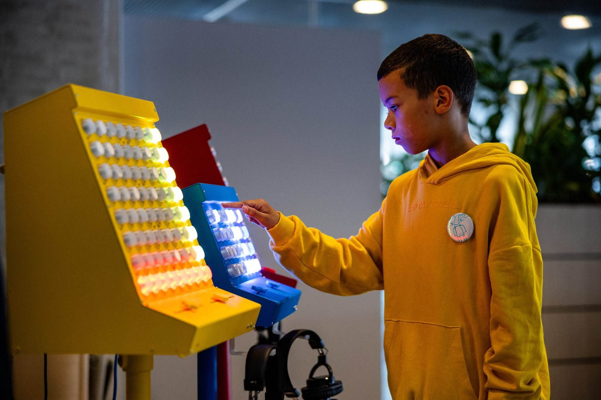
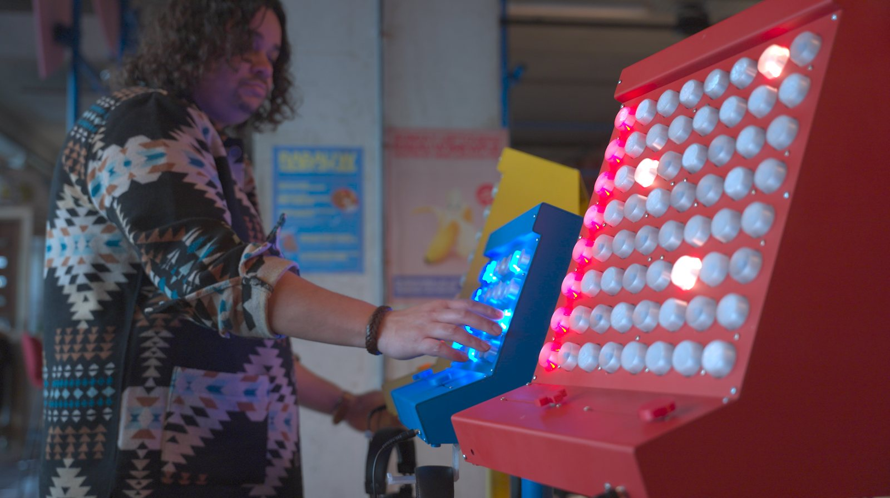

The Side Quest Rave
The Side Quest Rave is een interactieve muziekinstallatie waarmee iedereen keiharde elektronische muziek kan maken in harmonie met anderen. Een unieke samensmelting van technologie, muziek en design, waarbij het publiek centraal staat. Bezoekers experimenteren met drie intuïtief ontworpen muziekmachines.

Elke machine heeft een speels design, geïnspireerd door Gameboys en arcadekasten uit de jaren 90, en elk beschikt over zijn eigen kleur en type geluid. De gele machine is voor de lage tonen, waarmee je basgeluiden maakt. Met de rode machine maak je hoge tonen, perfect voor de melodie. De blauwe machine richt zich op ritmische geluiden, zoals de klanken van een drumstel.
Alles is ontworpen om intuïtief en uitnodigend te zijn. De machines moedigen je aan om elke knop te verkennen. Dankzij de onmiddellijke feedback leer je snel en op natuurlijke wijze hoe elke machine werkt, zonder dat er een uitgebreide handleiding nodig is.
Deze installatie was te bewonderen tijdens de Dutch Design Week 2023 en het Nerdland Festival 2024.







Projectinformatie
- Soort
- Eigen project
- Categorie
- Interactieve installaties
- Projecttype
- Interactieve muziekinstallatie met drie machines
- Studio Wotto verzorgde
- Concept, ontwerp, hardware, software en bouw
- Gepresenteerd bij
- Dutch Design Week 2023 en Nerdland Festival 2024
- Toepassing
- Festivals, evenementen en musea
- Beschikbaarheid
- Te huur op locatie
- Gerelateerde diensten
- Interactieve installaties, muziekinstrumenten op maat, muziektechnologie